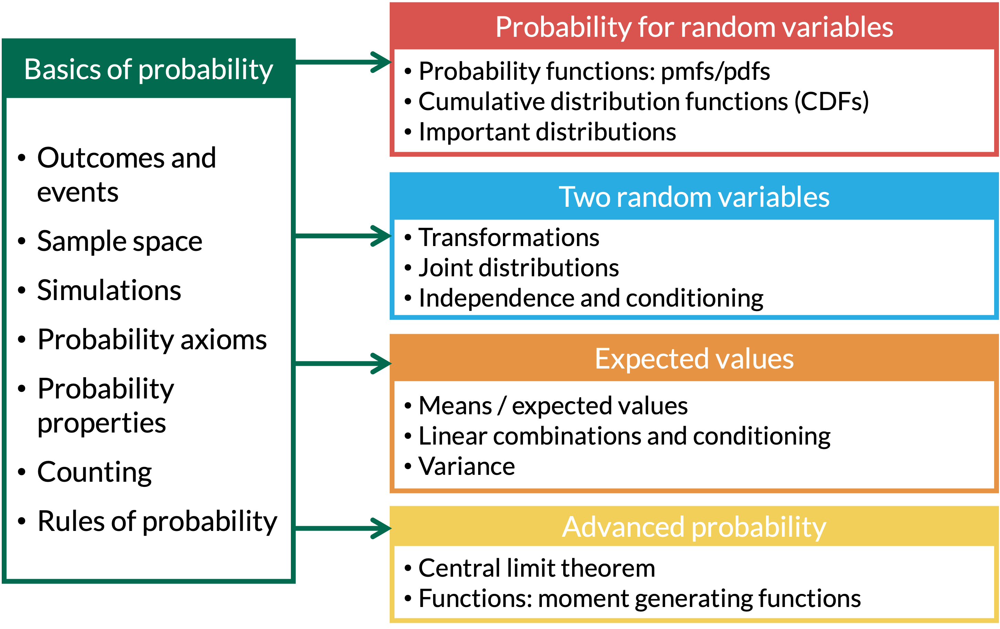

- 1
-
The ghost grabs one candy, and a chocolate is a success: \(P(X = 1)\) with \(p = \frac{10}{60}\).
size = 1means one trial.
[1] 0.16666672026-11-04

\[ X = \left\{ \begin{array}{ll} 1 & \quad \mathrm{with\ probability}\ p \quad \\ 0 & \quad \mathrm{with\ probability}\ 1-p \quad \end{array} \right. \]
\[ p_X(x) = P(X=x) = p^x(1-p)^{1-x} \text{ for } x=0,1 \]
\[\text{E}(X) = p\]
\[\text{Var}(X) = pq = p(1-p) \quad \text{ where } q = 1-p\]
We’ve seen a few examples of Bernoulli distributions:
Lesson 1: Toss one coin. Success is heads, so \(p = \frac{1}{2}\)
Lesson 7, Example 1 (falls in older adults): Whether one older adult has at least one fall in a year, \(p = 0.25\)
Lesson 10, Example 3: The general Bernoulli RV, where we found \(\text{E}(X) = p\)
Lesson 11, Example 2 (card example): Draw one card, and \(X = 1\) if it is a heart, \(p = \frac{1}{4}\)
Lesson 11, Example 5 (ghost problem): The ghost grabs one candy, and \(Y = 1\) if it is a chocolate, \(p = \frac{10}{60} = \frac{1}{6}\)
Scenario: There are \(n\) independent trials, each resulting in a success or failure, with constant probability, \(p\), in each trial. We are counting the number of successes (or failures).
Shorthand: \(X \sim \text{Binomial}(n, p)\)
A binomial random variable is the sum of \(n\) independent Bernoulli RVs
\[ X = \text{Number of successes of } n \text{ independent trials} \]
\[ p_X(x) = P(X=x) = {n \choose x}p^x(1-p)^{n-x} \text{ for } x=0,1,2, ..., n \]
\[\text{E}(X) = np\] \[\text{Var}(X) = npq = np(1-p)\]
Example 1
Recall the ghost problem from Lesson 11 (Example 5). The bag of candy has 10 chocolates, 20 lollipops, and 30 laffy taffies. The ghost grabs a handful of five pieces of candy with replacement.
Let \(Y\) be the number of chocolates the ghost takes.
What is the distribution of \(Y\)?
Find the mean and variance of \(Y\).
Recap from Lesson 7. R commands with their input and output:
| R code | What does it return? | What do we use it for? |
|---|---|---|
rbinom() |
returns sample of random variables with specified binomial distribution | Simulate a Binomial RV |
dbinom() |
returns probability of getting certain number of successes | \(P(X = x)\) |
pbinom() |
returns cumulative probability of getting certain number or less successes | \(P(X \leq x)\) (or \(P(X > x)\) if we add lower.tail = FALSE) |
qbinom() |
returns number of successes corresponding to desired quantile | Goes the other direction: we give it a probability \(p\) and it returns the value \(k\) where \(P(X \leq k) = p\) |
size = 1Example 1
Simulate \(Y\), the number of chocolates in 5 pieces, 10,000 times. Do the mean and variance match \(np = \frac{5}{6} \approx 0.833\) and \(np(1-p) = \frac{25}{36} \approx 0.694\)?
tibble() makes a table with one row per simulation, like the not-so-fair die in Lesson 10.
rbinom() draws one value of \(Y\) for every row. n() is the number of rows, size is \(n\), and prob is \(p\). No need to draw each candy: rbinom() gives the number of chocolates directly!
# A tibble: 1 × 3
average variance prob_1
<dbl> <dbl> <dbl>
1 0.838 0.700 0.394
Connecting to Lesson 11
In Lesson 11 we found the variance by adding up 5 Bernoulli variances. Now the binomial formula does it in one step!
Scenario: There are repeated independent trials, each resulting in a success or failure, with constant probability of success for each trial. We are counting the number of trials until the first success.
Shorthand: \(X \sim \text{Geo}(p)\) or \(X \sim \text{Geometric}(p)\) or \(X \sim \text{G}(p)\)
\(X =\) Number of trials needed for first success (count \(x\) includes the success)
\[p_X(x) = P(X=x) = (1-p)^{x-1}p \quad \text{for } x=1,2,3,\ldots\]
\[F_X(x) = P(X\leq x) = 1-(1-p)^x \quad \text{for } x=1,2,3,\ldots\]
\[E(X)=\dfrac{1}{p} \qquad Var(X)= \dfrac{1-p}{p^2}\]
\(X =\) Number of failures before first success (count \(x\) does not include the success)
\[p_X(x) = P(X=x) = (1-p)^{x}p \quad \text{for } x=0,1,2,\ldots\]
\[F_X(x) = P(X\leq x) = 1-(1-p)^{x+1} \quad \text{for } x=0,1,2,\ldots\]
\[E(X)=\dfrac{1-p}{p} \qquad Var(X) = \dfrac{1-p}{p^2}\]
Example 2
We throw darts at a dartboard until we hit the bullseye. Assume throws are independent and the probability of hitting the bullseye is 0.01 for each throw.
What is the pmf for the number of throws needed to hit the bullseye?
What are the mean and variance for the number of throws needed to hit the bullseye?
Find the probability that our first bullseye:
is on one of the first fifty tries
is after the \(50^{th}\) try, given that it did not happen on the first 20 tries
Example 2
We throw darts at a dartboard until we hit the bullseye. Assume throws are independent and the probability of hitting the bullseye is 0.01 for each throw.
Example 2
We throw darts at a dartboard until we hit the bullseye. Assume throws are independent and the probability of hitting the bullseye is 0.01 for each throw.
Example 2
We throw darts at a dartboard until we hit the bullseye. Assume throws are independent and the probability of hitting the bullseye is 0.01 for each throw.
Find the probability that our first bullseye:
is on one of the first fifty tries
is after the \(50^{th}\) try, given that it did not happen on the first 20 tries
If we know \(X\) is greater than some number (aka given \(X >j\)), then the probability of \(X > k+j\) is just the probability that \(X>k\).
This is the memoryless property.
\(P(X > k+j |X > j) = P(X > k)\)
\[ P(X > k+j |X > j) = \dfrac{P(X>k+j \text{ and } X>j)}{P(X>j)} = \dfrac{P(X>k+j)}{P(X>j)} = \dfrac{(1-p)^{k+j}}{(1-p)^{j}} = (1-p)^{k} \]
R commands with their input and output:
| R code | What does it return? | What do we use it for? |
|---|---|---|
rgeom() |
returns sample of random variables with specified geometric distribution | Simulate a Geometric RV |
dgeom() |
returns probability of getting certain number of failures before the first success | \(P(X = x)\) |
pgeom() |
returns cumulative probability of getting certain number of failures or less | \(P(X \leq x)\) (or \(P(X > x)\) if we add lower.tail = FALSE) |
qgeom() |
returns number of failures corresponding to desired quantile | Goes the other direction: we give it a probability and it returns the value \(k\) where \(P(X \leq k)\) reaches it |
rgeom() simulates a geometric RV directly, so we don’t need to act out every throwreps is still 10,000.
rgeom() draws one value for every row. n() is the number of rows and prob is \(p\). Careful: R counts the misses (failures) before the first bullseye.
X is the number of throws, our \(X\).
misses is R’s count of failures, and X is the throw number of the first bullseye.
# A tibble: 10,000 × 3
sim misses X
<int> <int> <dbl>
1 1 4 5
2 2 17 18
3 3 65 66
4 4 223 224
5 5 121 122
6 6 33 34
7 7 120 121
8 8 112 113
9 9 7 8
10 10 4 5
# ℹ 9,990 more rows# A tibble: 1 × 3
average variance prob_first_50
<dbl> <dbl> <dbl>
1 100. 10012. 0.395
# A tibble: 1 × 1
prob_after_50
<dbl>
1 0.740
# A tibble: 1 × 1
prob_after_30
<dbl>
1 0.74\[ X = \text{Number of independent trials until } r^{th} \text{ success} \]
\[ p_X(x) = P(X=x) = {x-1 \choose r-1}(1-p)^{x-r}p^r \text{ for } x = r, r+1, r+2, ...\]
\[ E(X) = \dfrac{r}{p} \qquad Var(X) = \dfrac{rq}{p^2} = \dfrac{r(1-p)}{p^2}\]
Example 3
Consider again the bullseye example, where we throw darts at a dartboard until we hit the bullseye. Assume throws are independent and the probability of hitting the bullseye is 0.01 for each throw.
Example 3
Consider again the bullseye example, where we throw darts at a dartboard until we hit the bullseye. Assume throws are independent and the probability of hitting the bullseye is 0.01 for each throw.
R commands with their input and output:
| R code | What does it return? | What do we use it for? |
|---|---|---|
rnbinom() |
returns sample of random variables with specified negative binomial distribution | Simulate a Negative Binomial RV |
dnbinom() |
returns probability of getting certain number of failures before the \(r^{th}\) success | \(P(X = x)\) |
pnbinom() |
returns cumulative probability of getting certain number of failures or less | \(P(X \leq x)\) (or \(P(X > x)\) if we add lower.tail = FALSE) |
qnbinom() |
returns number of failures corresponding to desired quantile | Goes the other direction: we give it a probability and it returns the value \(k\) where \(P(X \leq k)\) reaches it |
size is \(r\), the number of successes.Example 3
Simulate \(X\), the number of throws needed to hit 5 bullseyes, 10,000 times. Do the mean and variance match \(\frac{r}{p} = 500\) and \(\frac{r(1-p)}{p^2} = 49500\)?
p is still 0.01 from the first bullseye simulation.
rnbinom() draws one value for every row. size is \(r\) and prob is \(p\). Careful: like rgeom(), R counts the misses before the \(5^{th}\) bullseye.
X is the number of throws.
# A tibble: 1 × 3
average variance prob_20
<dbl> <dbl> <dbl>
1 504. 50303. 0
prob_20 is 0! \(P(X = 20) \approx 0.00000033\) is so small that 10,000 simulations never see it. For very rare events, use dnbinom() instead.\[ X = \text{Number of successes in a given period (or given space)} \]
\[ p_X(x) = P(X=x) = \dfrac{e^{-\lambda}\lambda^x}{x!} \text{ for } x = 0, 1, 2,3, ...\]
\[ \text{E}(X) = \lambda\]
\[\text{Var}(X) = \lambda\]
Binomial: \(X\sim \text{Binomial}(n,p)\)
\(X\) models the number of successes …
in \(n\) independent (Bernoulli) trials …
that each have the same probability of success, \(p\)
Poisson: \(X\sim \text{Poisson}(\lambda)\)
\(X\) models the number of successes …
in a fixed time period (or space), instead of \(n\) discrete independent trials …
that happen at a constant rate, \(\lambda\), instead of a probability
Number of visitors to an emergency room in an hour during a weekend night
Number of study participants enrolled in a study per week
Number of pedestrians walking through a square mile
Number of babies born with a cleft palate within 1 year (rare events)
Any more?
Example 4
Suppose an emergency room has an average of 50 visitors per day. Find the following probabilities.
Probability of 30 visitors in a day.
Probability of 8 visitors in an hour.
R commands with their input and output:
| R code | What does it return? | What do we use it for? |
|---|---|---|
rpois() |
returns sample of random variables with specified Poisson distribution | Simulate a Poisson RV |
dpois() |
returns probability of getting certain number of successes in the time period | \(P(X = x)\) |
ppois() |
returns cumulative probability of getting certain number or less successes | \(P(X \leq x)\) (or \(P(X > x)\) if we add lower.tail = FALSE) |
qpois() |
returns number of successes corresponding to desired quantile | Goes the other direction: we give it a probability and it returns the value \(k\) where \(P(X \leq k)\) reaches it |
lambda \(= \lambda\). Make sure it matches the time period in the question!Example 4
Suppose an emergency room has an average of 50 visitors per day.
dpois() gives \(P(X = x)\) for a Poisson RV, like dbinom() did for the binomial. Here \(x = 30\) and \(\lambda = 50\) visitors per day.
[1] 0.0006771985Change \(\lambda\), not \(X\)
When the time period changes, change the rate \(\lambda\) to match it.
Theorem 1
If \(X\sim Pois(\lambda_1)\) and \(Y\sim Pois(\lambda_2)\) are independent of each other, then \[Z=X+Y\sim Pois(\lambda_1 + \lambda_2)\]
Example 5
Suppose emergency room 1 has an average of 50 visitors per day, and emergency room 2 has an average of 70 visitors per day, independently of each other. What is the probability distribution that models the total number of visitors to both?
Example 5
Simulate one day of visitors at each emergency room 10,000 times. Does the total, \(Z = X + Y\), have the mean and variance of a \(\text{Pois}(120)\)?
rpois() draws the number of visitors to emergency room 1 for every row. n() is the number of rows and lambda is the rate, \(\lambda_1 = 50\) visitors per day.
# A tibble: 1 × 2
average variance
<dbl> <dbl>
1 120. 120.
Both Poisson and Binomial RVs are counting the number of successes
If for a Binomial RV
the number of trials \(n\) is very large, and
the probability of success \(p\) is small (close to 0),
Then the Poisson distribution can be used to approximate Binomial probabilities
and we use \(\lambda = np\)
If \(p\) is close to 1, count the failures instead, with \(\lambda = n(1-p)\)
Rule of thumb: We can use the Poisson approximation when \(n \geq 20\) and \(p \leq 0.05\), or when \(n \geq 100\) and \(np \leq 10\)
Example 6
Suppose that in the long run, errors in a medical testing lab are made 0.1% of the time. Find the probability that fewer than 4 mistakes are made in the next 2,000 tests.
Find the probability using the Binomial distribution.
Approximate the probability in part (1) using the Poisson distribution.
To do for extra practice - will also see a similar problem in BSTA 511
pbinom() and ppois() give \(P(X \leq x)\)\[ X = \text{Number of successes in } n \text{ draws} \]
\[ p_X(x) = P(X=x) = \dfrac{{M \choose x}{N-M \choose n-x}}{{N \choose n}} \] \[\text{ for } x \text{ integer-valued } \\ \max(0, n-(N-M)) \leq x \leq \min(n, M)\]
\[\text{E}(X) =\dfrac{nM}{N}\]
\[\text{Var}(X) = n \dfrac{M}{N} \bigg(1- \dfrac{M}{N} \bigg)\bigg(\dfrac{N-n}{N-1} \bigg)\]
Example 7
A wildlife biologist is using mark-recapture to research a wolf population. Suppose a specific study region is known to have 24 wolves, of which 11 have already been tagged. If 5 wolves are randomly captured, what is the probability that 3 of them have already been tagged?
R commands with their input and output:
| R code | What does it return? | What do we use it for? |
|---|---|---|
rhyper() |
returns sample of random variables with specified hypergeometric distribution | Simulate a Hypergeometric RV |
dhyper() |
returns probability of getting certain number of successes in \(n\) draws | \(P(X = x)\) |
phyper() |
returns cumulative probability of getting certain number or less successes | \(P(X \leq x)\) (or \(P(X > x)\) if we add lower.tail = FALSE) |
qhyper() |
returns number of successes corresponding to desired quantile | Goes the other direction: we give it a probability and it returns the value \(k\) where \(P(X \leq k)\) reaches it |
m \(= M\) (successes), n \(= N - M\) (failures), and k \(= n\) (draws): dhyper(x, m = M, n = N - M, k = n)rhyper() captures 5 of the 24 wolves without replacement for usrhyper() draws the number of tagged wolves for every row. The first input is how many values to draw (n(), the number of rows). Careful: in R, m is the number of successes (\(M\)), n is the number of failures (\(N - M\)), and k is the number of draws.
# A tibble: 1 × 2
average prob_3
<dbl> <dbl>
1 2.29 0.301choose(top, bottom) is \({top \choose bottom}\).
dhyper() does the same thing. Careful: in R, m is the number of successes (\(M\)), n is the number of failures (\(N - M\)), and k is the number of draws (\(n\)).
[1] 0.302795
[1] 0.302795Suppose a hypergeometric RV \(X\) has the following properties:
the population size \(N\) is really big,
and the number of items \(n\) selected is small (relative to \(N\))
Rule of thumb: \(\dfrac{n}{N}<0.05\) (equivalently, \(N>20n\))
Then, in this case, making \(n\) draws from the population doesn’t change the probability of success much, and the hypergeometric RV can be approximated by a binomial RV with \(p = \frac{M}{N}\)
Example 8
Suppose a specific study region is known to have 2400 wolves, of which 1100 have already been tagged.
If 50 wolves are randomly captured, what is the probability that 20 of them have already been tagged?
Approximate the probability in part (1) using the binomial distribution.
Example 8
Suppose a specific study region is known to have 2400 wolves, of which 1100 have already been tagged.
If 50 wolves are randomly captured, what is the probability that 20 of them have already been tagged?
Approximate the probability in part (1) using the binomial distribution.
[1] 0.08132015
[1] 0.08107414\[ X = \text{Outcome of interest, with } x=1, 2, ..., N \]
\[ p_X(x) = P(X=x) = \dfrac{1}{N} \text{ for } x=1, 2, 3, ..., N \]
\[\text{E}(X) =\dfrac{N+1}{2}\]
\[\text{Var}(X) = \dfrac{N^2 -1}{12}\]
Example 9
Examples of discrete uniform RVs
sample(1:N, ...) without prob, we simulated a discrete uniform RV!Lesson 12 Slides